結局同期させるならGitが最強。
HTMLファイルをGit管理して、Pushしたら
のどちらかをする。今回は1.を行う。
ローカル（PC側）
リモート（Raspberry Pi）
とりあえずざっくりとした説明として、Gitとはソフトウェアのことで、ファイルの「状態」を管理する。例えば適当にテキストファイルを作ったとして、変更を加えて上書き保存をするとそのテキストファイルの「状態」が変化する。Gitはその状態の変化（ファイルの差分）を記録しておき、上書き前の状態に巻き戻したりしてくれる。もちろん最新状態に戻ってくることも可能。他には
PowerShellなどのCLI上で動くのがオリジナルで、GUI操作を可能にした派生バージョンもいくつかある。
IT業界では必須技術。
詳しく説明すると1冊の本が出来上がるので、とりあえずここでは必要なコマンドを必要な時に紹介していく。
すでに持っている人も、最新バージョンにしておくという意味で。
上記ページからインストーラーをダウンロードしてインストールする。
色々聞かれるけど、全部デフォルトでいく。
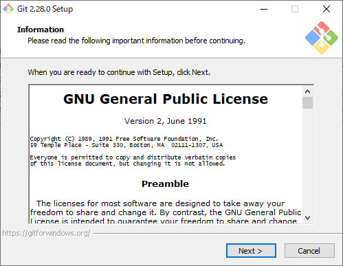
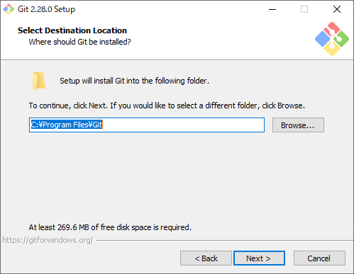
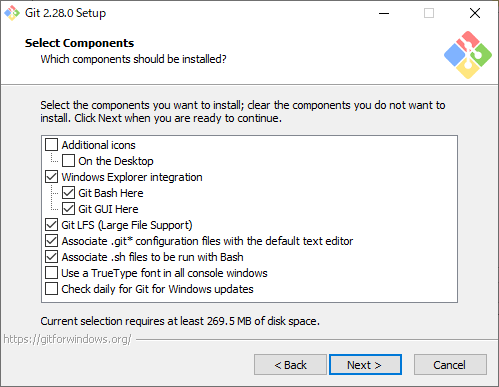
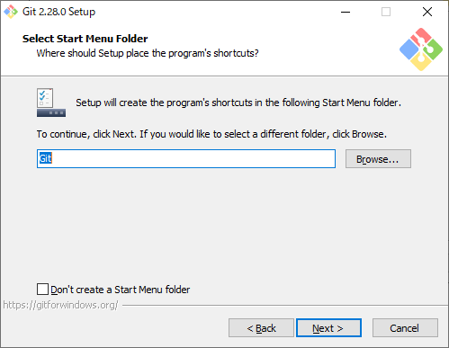
む、テキストエディタ。
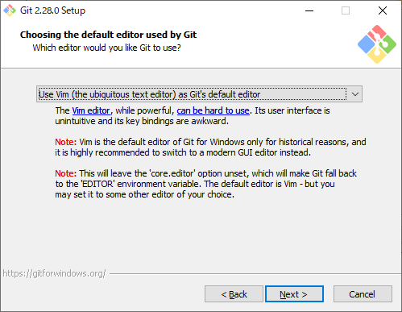
Gitはコミットメッセージというものを書くときにテキストエディタを立ち上げるので、それをどのエディタにするか選べと聞いてくる。
デフォルトで選択されている「Vim」というエディタは「キモいからやめとけ」的なメッセージが書かれている。かといってここに並んでいるエディタは別途入手が必要なものばかり。自分はSublimeを持ってるけど有料なので、無料でいくならVSCodeをダウンロードすることをオススメする。
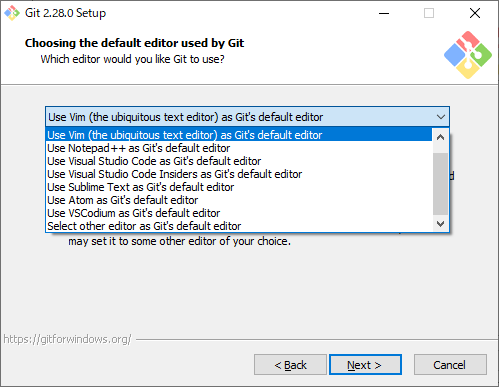
残りはまたデフォルトで。
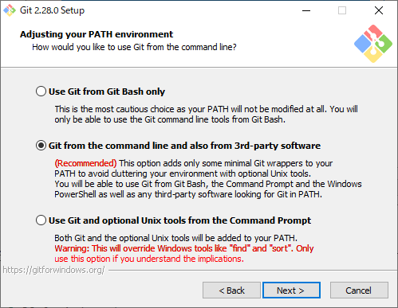
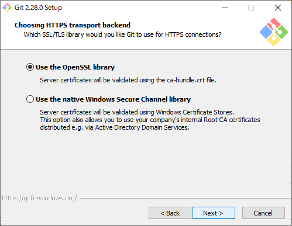
おっとこいつはデフォルトではいけない。「Checkout Windows-style, commit Unix-style line endings」を選択する。ざっくり言うと改行コードの話。WindowsとLinuxでは改行のやり方が違い、このオプションはWindows上ではWindows流の改行コードで、Linux上ではLinux流の改行コードでという意味。（正確には違うけど、大体そんな感じ）
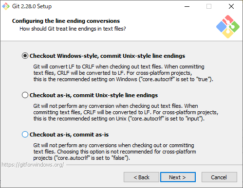
再びそのままポチポチ。
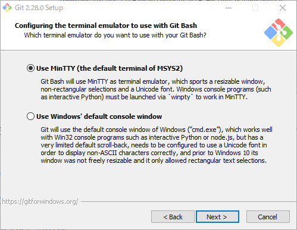
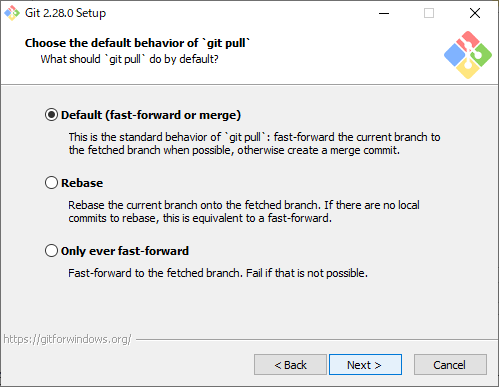
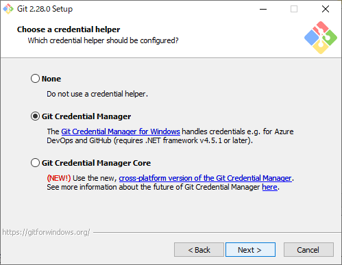
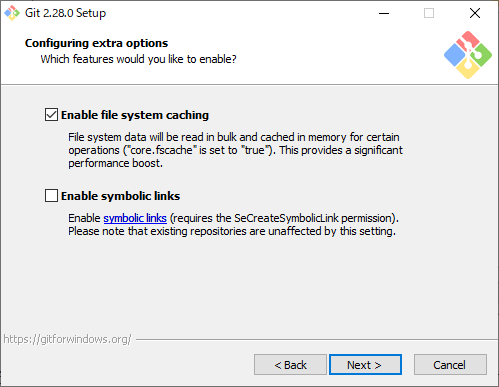
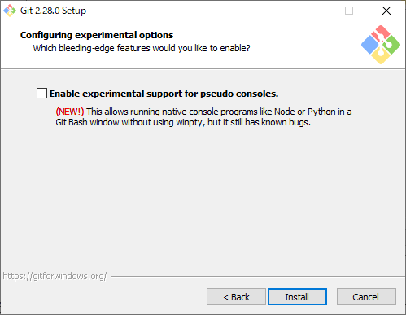
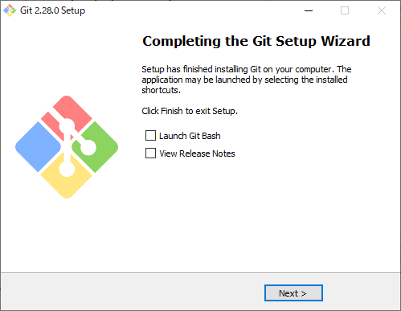
インストールが完了したらPowerShellでバージョン確認。
> git --versiongit version 2.28.0.windows.1使うためには名前とメールアドレスの設定が必要。
xxxxxxxxxx> git config --grobal user.name "(名前)"> git config --global user.email "(メールアドレス)"Windows内の、HTMLファイル類を収めたフォルダをd:\testとする。
xxxxxxxxxxDドライブ├（他フォルダ）└test├HTMLファイルとか├mdファイルとか└サブフォルダとか
このとき、「testフォルダをGit管理下に置く」とは「testフォルダの中に新たに.gitというフォルダを作り、そこにGitが『ファイルの状態』を記録していく」ということ。
この.gitという名前の付いたフォルダのことを「リポジトリ」と呼ぶ。ローカルに作るリポジトリだからローカルリポジトリ。隠しフォルダになっているので、エクスプローラーの設定で見えるようにしておく。
xxxxxxxxxx> cd d:\test> git initInitialized empty Git repository in D:/test/.git/これでフォルダ構造は以下の様になった。
xxxxxxxxxxDドライブ├（他フォルダ）└test├HTMLファイルとか├mdファイルとか├サブフォルダとか└.git├（Gitに必要な）└（ファイル色々）
.mdファイルはアップロードに必要ないので外す。してもいいけど、せっかくなので.gitignoreの設定も練習しておく。
d:\testフォルダの中（.gitフォルダの中ではない）に.gitignoreという名前のファイルを作ってその中に以下を記述。
xxxxxxxxxx*.md
管理から外したいファイルを記述すればOK。ワイルドカードも使える。
Gitはファイルの状態を記録していくけど自動ではない。少し用語を説明しておくと
.mdファイルとかサブフォルダなどの、いわゆる管理対象とする実ファイル・フォルダたちということで「ワーキングツリーのうち、更新されたファイルのみをステージングし、コミットすることで状態を記録していく」ということになる。
ステージングのことを「インデックスに追加」と呼んだりもする。
xxxxxxxxxx> git add .「LFをCRLFに変えとくよ」的なメッセージが出るかもしれないけど特に気にしなくてOK。
今の状態の確認。
x> git statusOn branch masterNo commits yetChanges to be committed: (use "git rm --cached <file>..." to unstage) new file: .gitignore .....「Changes to be committed:」というのが、「これからコミットされるファイルリストだよ」的なことを言っている。testフォルダの中身が全部表示されるけど、.mdファイルは無視している、はず。
初コミット。
xxxxxxxxxx> git commit -m "The first commit."[master (root-commit) 167fb86] The first commit. 139 files changed, 14770 insertions(+) create mode 100644 .gitignore ....これで.gitフォルダの中に現在のファイルの状態が記録された。このステージング～コミットを繰り返して.gitフォルダに「状態」を溜めていく。特別なコマンドを打てば後で過去の状態に巻き戻すことが可能。
今度はリモート側。SSHログインした後、
xxxxxxxxxx$ git --versiongit version 2.20.1現時点（2020年10月3日）で、aptコマンド経由でインストールできる最新バージョンはこれらしい。すでに入っている。
もし最新バージョンが更新されていて、ダウンロードできるかどうか確認したい場合、下のコマンドを打ってGitが含まれていたらできる。ついでに他の重要そうなアップデートも確認しておくと良い。
xxxxxxxxxx$ sudo apt update$ sudo apt list --upgradableもしこの内容でバージョンアップするなら以下のコマンドを打つ。
xxxxxxxxxx$ sudo apt upgrade$ sudo reboot以前に設定した時のままだが、Nginxのドキュメントルートはtakeshiユーザーのホームディレクトリにあるwww/htmlに設定してある。Gitでアップロードできることを確認したいので一旦全部消す。
xxxxxxxxxx$ cd ~/www$ sudo rm -rf htmlその後再度htmlディレクトリを作る。
xxxxxxxxxx$ mkdir html$ ls -altotal 12drwxrwxr-x 3 takeshi upload 4096 Oct 3 22:00 .drwxr-xr-x 21 takeshi takeshi 4096 Oct 1 23:39 ..drwxr-xr-x 3 takeshi takeshi 4096 Oct 3 22:00 htmluploadユーザーがhtmlディレクトリにアップロードしていく体制にしたいので、権限を修正する。
xxxxxxxxxx$ chown -R takeshi:upload html$ chmod -R 775 html$ ls -altotal 12drwxrwxr-x 3 takeshi upload 4096 Oct 3 22:00 .drwxr-xr-x 21 takeshi takeshi 4096 Oct 1 23:39 ..drwxrwxr-x 3 takeshi upload 4096 Oct 3 22:00 htmlhtmlディレクトリに入り、Gitのリポジトリを作成。--sharedとしてtakeshiユーザーとuploadユーザーが共有できるリポジトリとする。uploadユーザーしか.gitをいじらないけど、一応takeshiユーザーも何かの時のためにいじれるようにしておく。
よく解説サイトにある--bareオプションは付けないでいく。--bareオプションとは.gitだけを保持してHTMLファイルなどを作らないというオプション。今回はHTMLファイルも作っておいてほしいので--bareオプションを外しておく。
※知ってる人向け：--bare無しは地雷になるんじゃない？と思うかもしれないけど、運用方法を鑑みた上で後で対策をするのでとりあえずこれでいく。
xxxxxxxxxx$ cd html$ git init --shared.gitディレクトリの権限を確認する。
xxxxxxxxxx$ ls -altotal 12drwxrwxr-x 3 takeshi upload 4096 Oct 3 22:21 .drwxrwxr-x 3 takeshi upload 4096 Oct 3 22:19 ..drwxrwsr-x 7 takeshi takeshi 4096 Oct 3 22:21 .git.gitは外部から覗かれるややこしいのでwww-dataユーザー（Nginxの手下。HTMLファイルなどを読みに行くユーザー）に対する権限をはく奪する。ついでに.gitもuploadグループ所属とする。
xxxxxxxxxx$ chown -R takeshi:upload .git$ chmod -R 770 .git$ ls -altotal 12drwxrwxr-x 3 takeshi upload 4096 Oct 3 22:21 .drwxrwxr-x 3 takeshi upload 4096 Oct 3 22:19 ..drwxrws--- 7 takeshi upload 4096 Oct 3 22:21 .git.gitの所有グループに対する実行権限がsと表示されているけど、これは「SGIDが付いているディレクトリ」を示す。これはそのディレクトリ配下に作成されたファイル・ディレクトリの所有グループが、SGIDを設定されたディレクトリ（つまりここでは.gitディレクトリ）の所属グループと同じになる。これはgit init時に--sharedオプションを付けた影響。
現在ローカルにリポジトリがあり、リモートにもリポジトリがある。今から通信設定をする。
今Raspberry PiのSSHは公開鍵認証のみ受け付けている。そしてアップロードにはuploadユーザーを使用したい。なのでそのことをローカルのGitに教える。
C:\Users\(ユーザー名)\.sshフォルダの中にconfigという拡張子無しのファイルを作成し、以下を記述。
xxxxxxxxxxHost raspberrypiUser uploadHostName (Raspberry PiのIP)Port (設定したポート番号)IdentityFile (uploadユーザーの秘密鍵の場所)IdentitiesOnly yes
大体読めば分かると思う。IdentitiesOnlyとはIdentityFileで指定された秘密鍵のみ使用するということ。
ローカルにある.gitフォルダの中にconfigというファイルがあり、その中に「どこにアップロードすべきか」ということを書いてあげる作業。
xxxxxxxxxx> git remote add origin raspberrypi:/home/takeshi/www/html/.gitoriginは「このリモートリポジトリを今後originと呼ぶ」ということ。名前。リモートリポジトリは複数登録される可能性があり、2個目のリモートリポジトリには別の名前を付けることで区別できる。ちなみにD:\test\.git\config内に書くので、D:\test専用のリモートリポジトリということになる。PC内の他のフォルダをGit管理下に置いた場合、リモートリポジトリの情報は共有されない。originという名前は慣例でメインで使用するリモートリポジトリに付ける。別にただの名前なので分かりやすければなんでもいいけど、とりあえず慣例に従う。
raspberrypi:/home/takeshi/www/html/.gitについて、raspberrypiは上記C:\Users\(ユーザー名)\.ssh\configのHostの行に記述した名前を使う。この名前を使うことによって、どこのサーバーでどんなユーザー名なのか、秘密鍵はどれを使えばいいのかなどが設定どおりに行われる。
ローカルリポジトリの内容をリモートリポジトリにアップロードすることを「プッシュする」という。
「originにmasterブランチの内容をアップロードしなさい」というコマンドを打つ。現在はmasterブランチしかない。
xxxxxxxxxx> git push origin masterEnumerating objects: 149, done.Counting objects: 100% (149/149), done.Delta compression using up to 8 threadsCompressing objects: 100% (148/148), done.Writing objects: 100% (149/149), 7.07 MiB | 10.15 MiB/s, done.Total 149 (delta 23), reused 0 (delta 0), pack-reused 0remote: Resolving deltas: 100% (23/23), done.remote: error: refusing to update checked out branch: refs/heads/masterremote: error: By default, updating the current branch in a non-bare repositoryremote: is denied, because it will make the index and work tree inconsistentremote: with what you pushed, and will require 'git reset --hard' to matchremote: the work tree to HEAD.remote:remote: You can set the 'receive.denyCurrentBranch' configuration variableremote: to 'ignore' or 'warn' in the remote repository to allow pushing intoremote: its current branch; however, this is not recommended unless youremote: arranged to update its work tree to match what you pushed in someremote: other way.remote:remote: To squelch this message and still keep the default behaviour, setremote: 'receive.denyCurrentBranch' configuration variable to 'refuse'.To raspberrypi:/home/takeshi/www/html/.git ! [remote rejected] master -> master (branch is currently checked out)error: failed to push some refs to 'raspberrypi:/home/takeshi/www/html/.git'なんじゃなんじゃ。
xxxxxxxxxxremote: error: By default, updating the current branch in a non-bare repositoryremote: is denied, because it will make the index and work tree inconsistentremote: with what you pushed, and will require 'git reset --hard' to matchremote: the work tree to HEAD.デフォルトでは、非ベアリポジトリの現在のブランチにアップデートすることは拒否されます。これはプッシュした内容により、インデックスとワークツリーを「inconsistent（不整合）」にしてしまうからで、HEADとワークツリーを合わせるために後で
git reset --hardが必要になります。
xxxxxxxxxxremote: You can set the 'receive.denyCurrentBranch' configuration variableremote: to 'ignore' or 'warn' in the remote repository to allow pushing intoremote: its current branch; however, this is not recommended unless youremote: arranged to update its work tree to match what you pushed in someremote: other way.
receive.denyCurrentBranchという設定項目の値をignoreかwarnにすれば現在のブランチにプッシュできますが、どうにかしてワーキングツリーをあなたがプッシュした内容に合わせるようにしない限りはこの方法はオススメしません。
どういうことだ。
調べてみて分かったこと。
git pushコマンドはリポジトリ（.gitディレクトリ）のみを書き換え、ワーキングツリーは変更しない。（なのでリモートリポジトリはベアであることが前提）その証拠に、上のエラー文に従ってreceive.denyCurrentBranchをignoreにしてみる。
リモート上で
xxxxxxxxxx$ cd /home/takeshi/www/html$ git config --add receive.denyCurrentBranch ignoreとし、ローカルに戻って
xxxxxxxxxx> cd d:\test> git push origin masterとするとPushに成功する。でも再度リモート上で
xxxxxxxxxx$ cd /home/takeshi/www/html$ ls(何も表示されない)$ git logcommit 167fb8619a1cc1b3f8dd9737ff55e1eb9ec4ae4e (HEAD -> master)Author: Takeshi <(メールアドレスが表示されてる)>Date: Sat Oct 3 00:02:42 2020 +0900 The first commit.となる。lsコマンドで何も表示されないので、HTMLファイルは作られていない。でもgit logコマンドでコミットの記録が表示されるということは.gitの中身は更新されているということ。
エラー文にあったとおり、git reset --hardを打ってみる。
※uploadユーザーでログインしていない場合は、uploadユーザーでログインしてから以下のコマンドを打つ。ファイルの所有者がuploadユーザーになり後から上書きできるようになる、はず。
xxxxxxxxxx$ git reset --hardHEAD is now at 167fb86 The first commit.takeshi@takeshipi:~/www/html $ ls(HTMLファイルとかサブフォルダとか)ワーキングツリーがリモート上で再現された。
最初はPushしたら勝手にワーキングツリーも展開されると思ったけど違った。対策として
3.でいきます。
というのも、別の場所にベアリポジトリを作って定期的にPullしたとして、
自分のRaspberry Piにログインするのは結局自分だけ
Raspberry Pi上では編集するつもりはないけど、何らかの事情でRaspberry Pi上のワーキングツリーを直接編集したとする。しかしそうしたとして
という手順が必要になるが、ベアリポジトリを作らない場合でも
をするので、結局手間的には一緒。
結局自分だけしか触らないというのが大きい。
問題点についてはgit config --add receive.denyCurrentBranch ignoreはどう危険なのか - 西尾泰和のはてなダイアリーが参考になる。
ということでPushして、直後にハードリセットをするスクリプトを書く。
x
# 定数たち$targetFolder = "D:\work\HTML\raspberrypi-server\test\html"$commitMessage = (Get-Date).ToString("yyyyMMddhhmmss")$remote = "upload@192.168.1.201"$privateKey = "../../id_rsa"$port = 51234$command = 'cd /home/takeshi/www/html && git reset --hard'# Git管理しているフォルダに移動cd $targetFolder# コミットgit add .git commit -m $commitMessage# Pushしてハードリセットgit push origin masterssh -i $privateKey -p $port $remote $command